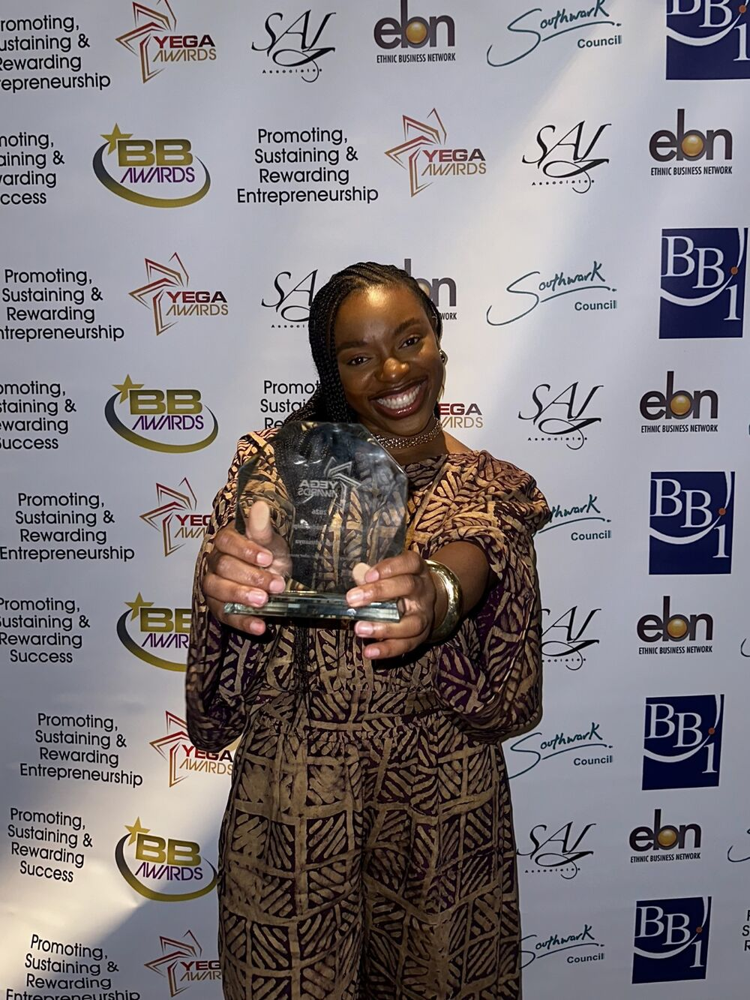
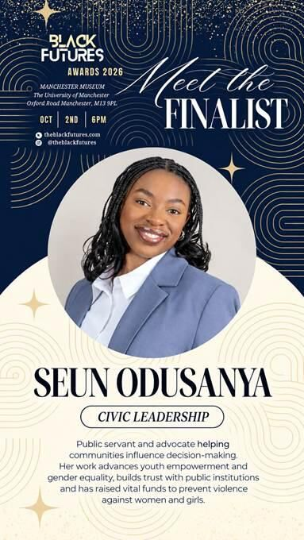
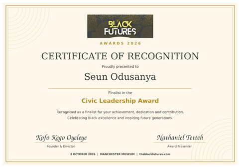
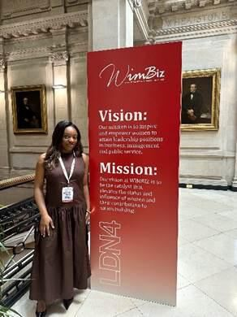
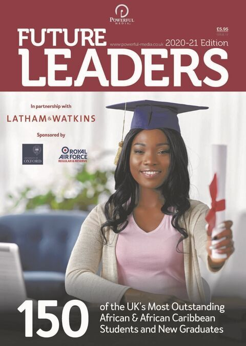
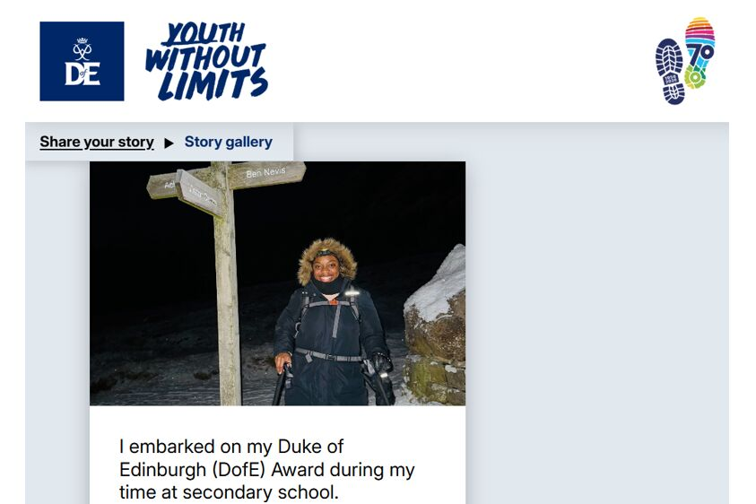
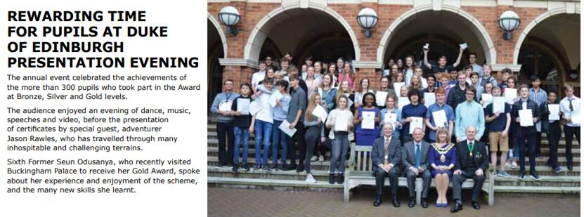

Awards & recognition
Finalist. Mentee. Gold.
Recognised for her achievement, dedication and contribution to inspiring future generations.
- First-Class Graduate
- UN Women UK
- Pan-African Youth Parliament
- Theirworld Ambassador

2026 · Finalist
23rd BBI Achievement Recognition Awards
Youth Leadership Recognition (Finalist).


2026 · Finalist
Black Futures Awards
Civic Leadership (Finalist). Recognised as a public servant and advocate helping communities influence decision-making. Her work advances youth empowerment and builds trust with public institutions.

2026 · Mentee
WIMBIZ Mentoring Programme
Seun is a mentee on the 2026 WIMBIZ Mentoring Programme, which exists to inspire and empower women to attain leadership positions in business, management and public service.

2020–21
Future Leaders, Powerlist Media
Named among 150 of the UK’s most outstanding African and African Caribbean students and new graduates, and one of six Lancaster University Future Leaders.


Gold
Gold Duke of Edinburgh Award
Seun embarked on her Duke of Edinburgh (DofE) Award during her time at secondary school and went on to receive her Gold Award. Her presentation evening was reported in the school magazine.